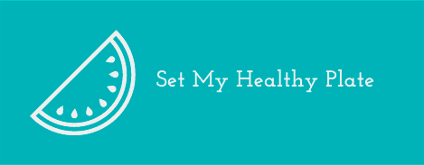

<header class="header">
  <nav role="header__nav">
    <!-- Mobile navigation -->
    <mat-drawer-container class="menuToggle" hasBackdrop>
      <mat-drawer #drawer mode="over" class="menuToggle__sideMenu">
        <ul class="sideMenu">
          <a routerLink="/" (click)="drawer.toggle()" class="sideMenu__item"
            ><li>¿Qué es SetMyHealthyPlate?</li></a
          >
          <a
            routerLink="/favorites"
            (click)="drawer.toggle()"
            class="sideMenu__item"
            ><li>Favoritos</li></a
          >
          <a
            routerLink="/weekly-menu"
            (click)="drawer.toggle()"
            class="sideMenu__item"
            ><li>Menú semanal</li></a
          >
          <a routerLink="/" (click)="drawer.toggle()" class="sideMenu__item"
            ><li>Lista de la compra</li></a
          >
          <a
            routerLink="/not-allowed-ingredients"
            (click)="drawer.toggle()"
            class="sideMenu__item"
            ><li>Alimentos no permitidos</li></a
          >
          <a routerLink="/" (click)="drawer.toggle()" class="sideMenu__item"
            ><li>Mi perfil</li></a
          >
          <a
            routerLink="/"
            (click)="drawer.toggle()"
            class="sideMenu__item"
            (click)="logOut()"
            ><li>Logout</li></a
          >
        </ul>
      </mat-drawer>
      <mat-drawer-content class="content">
        <div class="navBar">
          <button class="navBar__button" (click)="drawer.toggle()">
            <mat-icon>menu</mat-icon>
          </button>
          
        </div>
        <div class="mainContent">
          <router-outlet></router-outlet>
        </div>
      </mat-drawer-content>
    </mat-drawer-container>

    <!-- Desktop navigation -->
    <div class="desktopNav">
      <ul class="nav__list">
        <li>
          <a class="nav__list__link" routerLink="/"
            >¿Qué es SetMyHealthyPlate?</a
          >
        </li>
        <li>
          <a class="nav__list__link" routerLink="/favorites">Favoritos</a>
        </li>
        <li>
          <a class="nav__list__link" routerLink="/weekly-menu">Menú semanal</a>
        </li>
        <li>
          <a class="nav__list__link" routerLink="/">Lista de la compra</a>
        </li>
        <li>
          <a class="nav__list__link" routerLink="/not-allowed-ingredients"
            >Alimentos no permitidos</a
          >
        </li>
        <li><a class="nav__list__link" routerLink="/">Mi perfil</a></li>
        <li>
          <a class="nav__list__link" routerLink="/" (click)="logOut()"
            >Logout</a
          >
        </li>
      </ul>
      
    </div>
  </nav>
</header>
